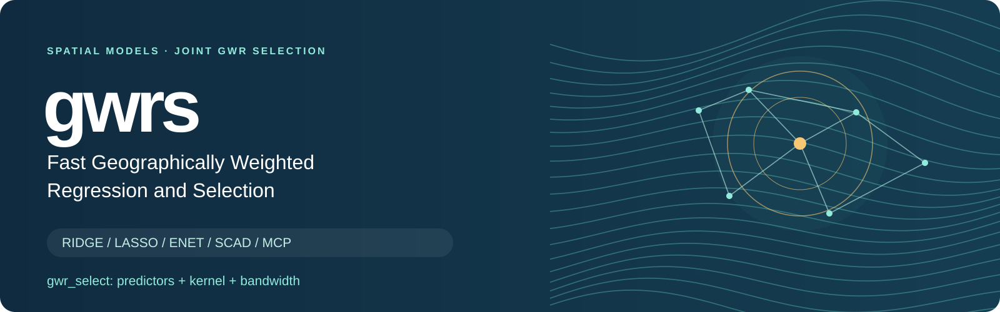

Fast Geographically Weighted Regression and Selection

Fit spatially varying relationships. Compare ordinary GWR models across predictor subsets, kernels and bandwidths. Fit and predict with geographically weighted Ridge, Lasso, Elastic Net, SCAD and MCP.
Install Get started Select a GWR model Explore ACS data Reproduce the paper
gwrs brings formula and matrix interfaces, joint ordinary-GWR model selection, regularization paths, spatial cross-validation and new-location prediction into one R package. Compiled RcppArmadillo and RcppParallel kernels reuse nearest-neighbor structures.
The package implements the GWR-SCAD and GWR-MCP estimators studied in Nonconvex Geographically Weighted Regression for Local Variable Selection. SCAD and MCP are established penalties; the paper concerns their geographically weighted estimators and computational treatment.
Joint GWR selection · Five regularization methods · Spatial cross-validation · 3,107-county ACS dataset
Choose an estimator
| Estimator | Formula interface | Matrix interface | Purpose |
|---|---|---|---|
| GWR-Ridge | gwr_ridge() |
gwr_ridge_fit() |
Quadratic shrinkage |
| GWR-Lasso | gwr_lasso() |
gwr_lasso_fit() |
Shrinkage and local selection |
| GWR-ENET | gwr_en() |
gwr_en_fit() |
Mixed quadratic and absolute-value penalties |
| GWR-SCAD | gwr_scad() |
gwr_scad_fit() |
Nonconvex local variable selection |
| GWR-MCP | gwr_mcp() |
gwr_mcp_fit() |
Nonconvex local variable selection |
Installation
From a downloaded source archive:
install.packages("gwrs_0.4.0.9015.tar.gz", repos = NULL, type = "source")The current source archive and reproduction ZIP are included in the repository. Install missing declared dependencies before using a source archive; this command does not download them automatically.
From a local checkout:
R >= 4.1, a C++17 compiler and the dependencies in DESCRIPTION are required. Install directly from the public GitHub repository:
remotes::install_github("byuzbasi/gwrs", build_vignettes = TRUE)This command requires the optional remotes installation tool. The repository and download links are publicly accessible.
Joint GWR model selection
gwr_select() compares unpenalized Gaussian GWR fits across predictor subsets, kernels and bandwidths on the same observations. It selects the best eligible GWR within the evaluated candidate grid. AICc is the default; AIC, BIC, GCV and conditional leave-one-out squared error are reported alongside it.
library(gwrs)
set.seed(1401)
dat <- data.frame(east = runif(28), north = runif(28),
x1 = rnorm(28), x2 = rnorm(28))
dat$y <- 1 + (1 + dat$east) * dat$x1 + rnorm(28, sd = 0.5)
selection <- gwr_select(y ~ x1 + x2, dat, c("east", "north"),
kernels = c("bisquare", "gaussian"), k = c(20, 28),
control = gwrs_control(n_threads = 1), verbose = FALSE)
selection$best_by_criterion
coef(selection)
head(selection$local_inference$local[, c("location", "coefficient",
"estimate", "standard_error", "statistic", "p_value", "p_adjusted")])This is a small simulated demonstration with dimensionless planar coordinates. Use appropriate projected coordinates for real observations. The example’s two kernels and two neighbor counts are demonstration choices, not an empirical tuning recommendation. k includes the target observation.
best_model is the selected GWR; best_overall also permits OLS to win. ranking retains invalid candidates and their reasons. The search supports fixed or adaptive bandwidths, grouped factor terms, required predictors, dry_run, resource budgets and verified checkpoint/resume. Exhaustive search covers the requested finite grid; deterministic stepwise search has no global optimum guarantee. Large subset searches can remain expensive.
The selected GWR also reports local coefficient-zero reference p-values and BH-adjusted p-values in selection$local_inference$local. BH is applied separately across locations for each coefficient, including the intercept. Only the selected GWR uses full diagnostics; search candidates retain standard diagnostics. Set local_inference = FALSE to skip this calculation. gwr_local_inference(selection, adjust_scope = "global") instead adjusts over all local coefficient tests in the selected model. These p-values are exploratory: BH does not establish reference calibration or account for response-based predictor/kernel/bandwidth selection. Local coefficient-zero tests differ from F3 spatial constancy; neither local p-values nor BH results rank candidates. Unavailable tests are explicitly reported.
Moran diagnostics are calculated only if you supply a common moran_weights matrix; otherwise the result explicitly reports that Moran was not calculated. F1/F2/F3 reference probabilities are exploratory and have no established calibration. F1 and F2 transform the same RSS ratio and are not independent confirmations. Diagnostic p-values never rank candidates. Predictive claims require external or nested spatial validation that repeats model selection.
Read the joint-selection guide for the complete search definition, diagnostic limits and checkpoint examples. In a package built with vignettes, use vignette("gwrs-selection", package = "gwrs").
Fit the five methods
The example uses deterministic, dimensionless unit-square coordinates. The small neighborhood and penalty choices illustrate the API and are not the paper’s simulation or application settings.
library(gwrs)
data <- expand.grid(east = seq(0, 1, length.out = 8),
north = seq(0, 1, length.out = 8))
i <- seq_len(nrow(data))
data$x1 <- sin(i / 5)
data$x2 <- cos(i / 7)
data$y <- 1 + (0.8 + data$east) * data$x1 - 0.7 * data$x2 + 0.05 * sin(i)
train <- data[1:48, ]
test <- data[49:64, ]
control <- gwrs_control(n_threads = 1, diagnostics = "none")
ridge <- gwr_ridge(y ~ x1 + x2, train, c("east", "north"),
k = 18, lambda = 0.08, control = control)
lasso <- gwr_lasso(y ~ x1 + x2, train, c("east", "north"),
k = 18, lambda = 0.08, control = control)
enet <- gwr_en(y ~ x1 + x2, train, c("east", "north"),
k = 18, lambda = 0.08, alpha = 0.5, control = control)
scad <- gwr_scad(y ~ x1 + x2, train, c("east", "north"),
k = 18, lambda = 0.08, gamma = 3.7, control = control)
mcp <- gwr_mcp(y ~ x1 + x2, train, c("east", "north"),
k = 18, lambda = 0.08, gamma = 3, control = control)
head(coef(scad))Here k is the number of retained neighbors, and lambda is the penalty strength. The default kernel is adaptive bisquare. Predictor standardization is enabled by default; coefficients are returned on the original predictor scale. The intercept is not penalized. For Elastic Net, alpha controls the mix of penalties. For SCAD/MCP, gamma controls penalty concavity; it is not a bandwidth parameter. Nonconvex fits are local numerical solutions and do not carry a universal global-optimality guarantee.
Spatial cross-validation and prediction
Supply the same folds and observations when comparing methods. The following example tunes MCP over a prespecified grid; use penalty = "ridge", "lasso", "elastic_net" or "scad" for the other methods. With Elastic Net, supply the chosen alpha; this example does not jointly tune bandwidth or alpha.
coords <- as.matrix(train[, c("east", "north")])
x <- as.matrix(train[, c("x1", "x2")])
fold <- spatial_folds(coords, n_folds = 3, seed = 42)
cv <- cv_gwr_penalized(x, train$y, coords, k = 18, fold = fold,
lambda = c(0.2, 0.08, 0.02), penalty = "mcp", refit = TRUE,
control = control)
cv$best
pred <- predict(cv$fit,
newdata = as.matrix(test[, c("x1", "x2")]),
newcoords = as.matrix(test[, c("east", "north")]), k = 18)
head(pred)Standardization and neighborhoods are constructed within each training fold. New-location predictions use training observations only. Check convergence and the returned CV diagnostics before interpreting fitted coefficients.
The complete five-method example runs all five fits, uses common CV folds and predicts at held-out locations. The user guide source is included with the package; after installing a build containing vignettes, open it with:
County dataset
This is a single cross-sectional table with one row per county. The 2024 ACS five-year product contains Census Bureau period estimates based on survey data collected during 2020–2024. The analysis uses these published estimates directly: separate annual observations are neither stacked nor arithmetically averaged. The 2024 suffix in the retained income column names identifies the ACS product and the inflation-adjustment year, not a single-year observation. The legacy dataset name acs2024_counties remains available for compatibility.
The package includes the documented 2020–2024 ACS five-year county dataset: 3,107 counties and 91 columns, including the study response, 26 predictors, 90% margins of error, controlled-MOE flags, geographic identifiers, projected coordinates and spatial folds.
data(acs2020_2024_counties, package = "gwrs")
head(acs2020_2024_counties[, c("fips", "county_name", "median_household_income_2024")])
help("acs2020_2024_counties", package = "gwrs")
citation("gwrs")The documentation describes sample exclusions, units and transformations. The income MOE is in dollars even though its column name starts with the log-response name. Please acknowledge the U.S. Census Bureau, the accompanying paper and gwrs when using this prepared dataset. The complete variable dictionary is installed in system.file("extdata", package = "gwrs").
Local selection across counties

The checked manuscript figure shows spatial variation in selected predictor counts among the 26 candidates. It describes this application; fewer selected predictors alone do not establish better recovery or prediction. The image is copied unchanged from the completed study. Its provenance record identifies the source and checksum.
Reproducing the paper
Current package version: 0.4.0.9015. The paper’s simulation used the recorded 0.4.0 implementation and the county analysis used 0.4.0.9006. Their versioned source archives and analysis scripts are preserved separately; the current package version must not be substituted silently in a historical run. See the reproduction guide, executed validation and limits and downloadable materials. The standalone ZIP contains the study code, public inputs, historical engines, checkpoint/resume workflow and integrity checks.
Cite and connect
Use citation("gwrs") for the package and accompanying manuscript citation. The CITATION.cff file also supports GitHub’s citation interface. Please acknowledge the Census Bureau when using the prepared ACS data.
Report an issue · Version notes · Five-method guide
Author and maintainer: Bahadir Yuzbasi. License: GPL (>= 3).